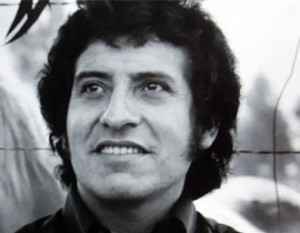

There, under the Earth,
you are not asleep, brother, Companion.
Your heart hears sprout spring
What, like you, blowing Iran winds.
It seems that he sang himself when he wrote these verses to Che, a few
five years after the world shake their murder in La Higuera, era
tortured and killed the singer of the Chilean people Victor Jara gunned, in
that Black September of 1973.
Arrive at your injured foot,
the hands of the humble, will arrive
planting.
Your death will bring many lives,
and where you were going, DeCamp,
singing.
The same hand behind the bullet, behind the dagger, behind the torture,
behind the pumps, the hand of US imperialism: bombing Viet Nam in
the years 60, giving the order to the Bolivian military in 1967 (thinking that the
Che Guevara could die), or planning and executing the coup in the shadows of
Fascist state of Pinochet in Chile in 1973. The same hand that reaches repeating
their modus operandi to the present day.
There is hidden where the criminal
your name provides the rich many names.
That burned your wings to fly
It will not turn off the fire of the poor.
Here brother, here on Earth,
the soul fills us flags
you are moving,
against fear,
advance,
Venceremos.
Alongside its military, the rule increases the "Science" of the
espionage, supported by the monopoly media and global information, hides its
massacres, distorts or muted events, defaming government,
destabilizes towns, sowing mistrust, hatred, racisms. The Empire has created
a 'culture' to destroy the cultures, a massive seudocultura for
delete the memory of the peoples, to demobilize us, dessocializarnos,
desalmar us; for nutritionists us, isolate us from real-world supplanting it with a
replete with illusions fair marks and labels:
The casitas del barrio alto
with porches and railings,
a beautiful driveway
waiting for a Peugeot.
There are pink, Green,
white boys and celestitas,
the casitas del barrio alto
all made with recipol.
It is the duty and urgent to rescue the memory of the Latin American peoples,
threatened with extinction. Surround us in the mist, with the globalization of the
consumer culture, art, nuestroamericana history; We crush with
desideologizados models, despoetizados through music, cinema, TV
(serial, video clips, soap operas), magazines, creating an image of the
Latino silly, empty, sexualista, gimmicky, invented us "latina beauty"
with its cliches to numb us, so we vanagloriemos be that not
We are, We neither want to be; these postcards for tourists which override the
intelligence, the beautiful traditions, poetry
creative that it travels in time giving thicket and deep art to our
peoples.
Get up and look at the mountain
where the wind comes, the Sun and water.
You that you manage the course of rivers,
you that you sow your soul flight.
Approaching the 11 September, and need to remember the events of 1973
in Chile. Insurance the globalized media will put his accent in the towers
Twin falling "unforgettably"; Although there is so much noise and suspected about
the hand that was behind those who toppled them (and we know well that
hand that lives in the dark knitting deaths), who will perhaps also
diluting that gloomy passage, to prevent opening Pandora's box. In
all case, and also in us solidarity with those victims, must
tell him, especially to younger, of that unity Government
Popular dear President Salvador Allende. How the imperial hand,
hidden in the costume of the oligarchy, destabilized the country growing
delivering justice; economic sabotage, libel in the press,
"guarimbas" or opposition cacerolazos... the same thing today in Venezuela,
Here is the vitally important not to let the memory be extinguished.
.
Gentlemen I will tell you
of the supply,
causing so much torment
so refined people.
They complain that there is nothing,
that you do not support queues,
When they want to join rage
they beat pans.
By the utility of the poetic beauty of his singing is that you I bring today to
Victor Jara, and especially and as a cause of her life itself. Jara was the
man who was singing for the workplace, by fields, that it got
in the mines to meet the dreams and sorrows of his people and bring them
then to songs; with that Member look of dramatist and poet
to the spiritual essence and us mobilizes.
Get rid of the one who dominates us
in misery.
Bring us your Kingdom of righteousness
and equality.
As the wind blows the flower
the Creek.
Clean as the fire
the barrel of my gun.
Your will be done finally
here on Earth.
Give us your strength and your value
to the fight.
As the wind blows the flower
the Creek.
Clean as the fire
the barrel of my gun.
Víctor Lidio Jara Martínez, was born the 28 September of 1932, in Chile.
Dies murdered by the fascist dictatorship of Augusto Pinochet the 16 of
September of 1973. Singer-songwriter, Professor, prominent theatre director. To the 21
years, After military service, enter in the choir of the University of
Chile and begins his work of research and folklore compilation. In
1957 becomes part of the Group's songs and folk dances Cuncumen and
meet Violeta Parra, whom
encouraged him to continue singing. In 1960 received the title of theatre director.
He directed several plays and won the Golden Laurel for best director of the year.
In 1968 It became the popular music ensemble artistic director
Quilapayún. In 1967 published his first musical album, titled Víctor Jara.
Their second album, I put in your open hands (1969), coincided with the
support that lent to the candidature of the Unidad Popular of Salvador Allende
as militant of the Communist Youth. In 1970 published in "free song",
"El derecho de vivir en paz" and "Population", great creations
beauty and poetic force that made him one of the greatest exponents
revival and innovation of the song popular in Latin America.
Together with Isabel Parra and Inti-Illimani enters the Department of communications
of the State Technical University. With the House Dicap edit disc the
right to live in peace, It is worth the prize
Golden Laurel of the best composition of the year.
The right to live
poet Ho Chi Minh,
hitting of Viet Nam
to all mankind.
No Cannon deleted
your paddy Groove.
The right to live in peace.
Indo-China is the place
as apart of the wide sea,
where burst flower
with genocide and napalm.
The Moon is an explosion
It fuses all the cry.
The right to live in peace.
He works as a composer of music for continuity on National Television
of Chile from 1972 up to 1973, researches and collects evidence in
"Herminda de la Victoria", in which rely his album population.
It travels to the USSR and Cuba, and it directs the homage to Pablo Neruda by obtaining
the Nobel Prize..
If I Cuba sang le,
sing you a song
should be a son,
a revolutionary are,
foot with foot, with hand,
heart to heart,
heart to heart.
Victor Jara left indelible memories among Cubans; special relationship
wove with the Cuban troubadours, Silvio Rodriguez, Vicente Feliu, Paul
Milanese, Sara González, and Noel Nicola, with those who shared in multiple
sometimes, especially when were many of the Cubans to sing to the people
Chilean.
If you want to know to Marti and Fidel
to Cuba, to Cuba, Cuba I will go,
If you want to know the ways of the Che,
to Cuba, to Cuba, Cuba I will go,
If you want to take ron but not Coca Cola,
to Cuba, to Cuba, Cuba I will go,
If you want to work in the sugar cane,
to Cuba, to Cuba, Cuba I will go,
a boat goes swinging.
Among their main songs are: "Prayer to a farmer",
"A Cuba", "The casitas del barrio alto" (that is a translation and
Jara version on the piece "Little box" of the American singer
Malvina Reynolds), "The soul full of flags", "The right to live in"
peace", "Te recuerdo Amanda" and "You Ni chicha ni limona".
Arrimar maspa’ CA
here where the Sun heats,
Yes uste’ is already used
walk to give back flips
and will do no harm
be where the potatoes burn.
You are not na’
NI chicha ni limona
going to fidgeting with
zamba wow your dignity.
The coup of State of general Augusto Pinochet against President Salvador
Allende the 11 in September of that year it is surprising at the Technical University
State, and he is arrested along with teachers and students. They take him to the stadium
Chile where he remains detained several days.
We are five thousand
in this small part of the city.
We are five thousand
How many will be in total
in the cities and in the country?
Only here
ten thousand hands that sow
and they do go the factories.
How much humanity
with hunger, cold, panic, pain,
moral pressure, terror and madness!
According to numerous testimonies, They torture him for hours, they beat you hands
to break them to with rifle butts and finally acribillan it the day 16 September.
What fright causes the face of fascism!
they carry out their plans with artful precision
No matter nothing.
Blood for them are medals.
The killing is an act of heroism.
Is this the world you created, My god?
He was a prominent activist of the Communist Party of Chile, being member of the
Central Committee of the youth Communists of Chile until the moment of its
murder. While imprisoned he wrote his last poem and testimony: "We are
five thousand", I have been quoting; in another of its stanzas says:
And Mexico, Cuba and the world?
That you shout this ignominy!
We are ten thousand hands less
that you do not produce.
How many are we in all homeland?
The blood of fellow President
Stronger than bombs and shrapnel hits.
Thus it will hit our fist again.
In 1990 the truth and Reconciliation Commission determined that Victor Jara was
riddled with 44 shooting, the 16 September of 1973 in the Estadio Chile and
that was thrown into some bushes on the outskirts of the cemetery
Metropolitan, located on the banks of the road 5 South. As a tribute to his
memory, to 30 years of the military coup, in September of the 2003 put you your
name to the, so far, National Stadium of Chile.
I remember, Amanda,
the wet Street,
running factory
where was Manuel.
In 1967 Victor Jara was invited to Great Britain, where he received an award for
his Theater direction. Being there, away from their land, He composed this piece
inspired by his parents Amanda and Manuel. An eternal love story, of the world
workman, struggles for social justice. Whenever I hear this song
I am only ten years old walking to school, on a cloudy morning,
in which Havana radiated constantly the last words of Salvador
Allende in the
Currency:
"Workers of my country, I have faith in Chile and its destination. You will exceed others
men this gray and bitter moment in which betrayal seeks to impose itself.
Keep you knowing that, much more sooner than later, again will open
large malls through which pass the free man, to build a society
better. Viva Chile! Viva the people! Long live workers!
These are my last words and I am certain that my sacrifice will not be
in vain, I am sure that, at least, will be a moral lesson that
punish the felony, cowardice and betrayal".
I walked to school, was September of 1973, gonna find me a
girl of the classroom, Why already sighed; I was neither Manuel nor her Amanda,
but impotence and sense of justice were sown in
me with the voice of a being that sacrifices to sustain a dream, because does not cease the
cancionredentora.
Te recuerdo Amanda
.Author: Victor Jara.
I remember, Amanda,
the wet Street,
running factory
where was Manuel.
The wide smile,
rain in hair,
No matter nothing,
were going to find it,
with him, with him, with him, with him…
They are five minutes,
life is eternal
in five minutes.
Sounds the siren,
back to work
and you, walking,
It light up all,
five minutes
make you bloom.
Te recuerdo Amanda,
the wet Street,
running factory
where was Manuel.
The wide smile,
rain in hair,
No matter nothing,
were going to find it,
with him, with him, with him, with him…
He left for the mountains,
that it has never hurt,
He left for the mountains
and in five minutes
was crushed.
Sounds the siren,
back to work
many did not return,
Neither Manuel.
Te recuerdo Amanda,
the wet Street,
running factory
where was Manuel.
Source: www.lajiribilla.cu
and: www. eldiablo-ilustrado.blogspot.com


Recent Comments